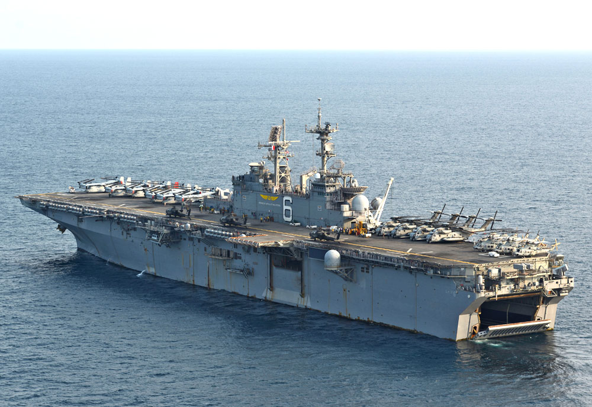
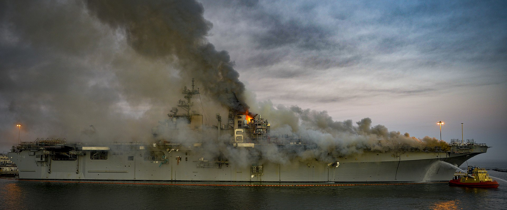
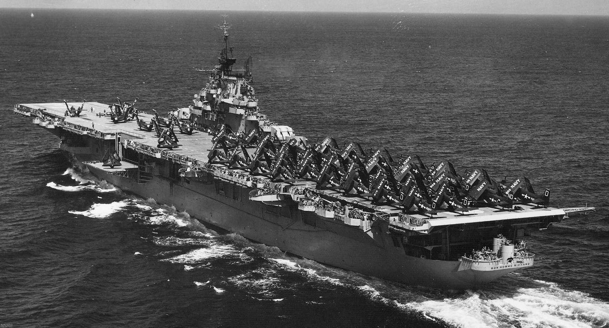
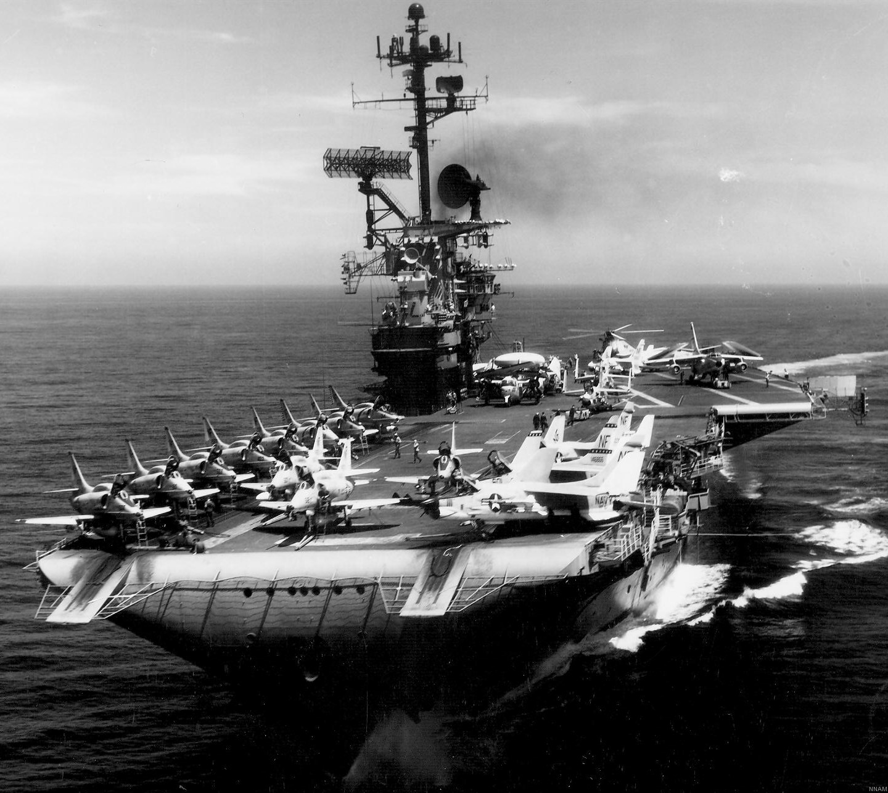
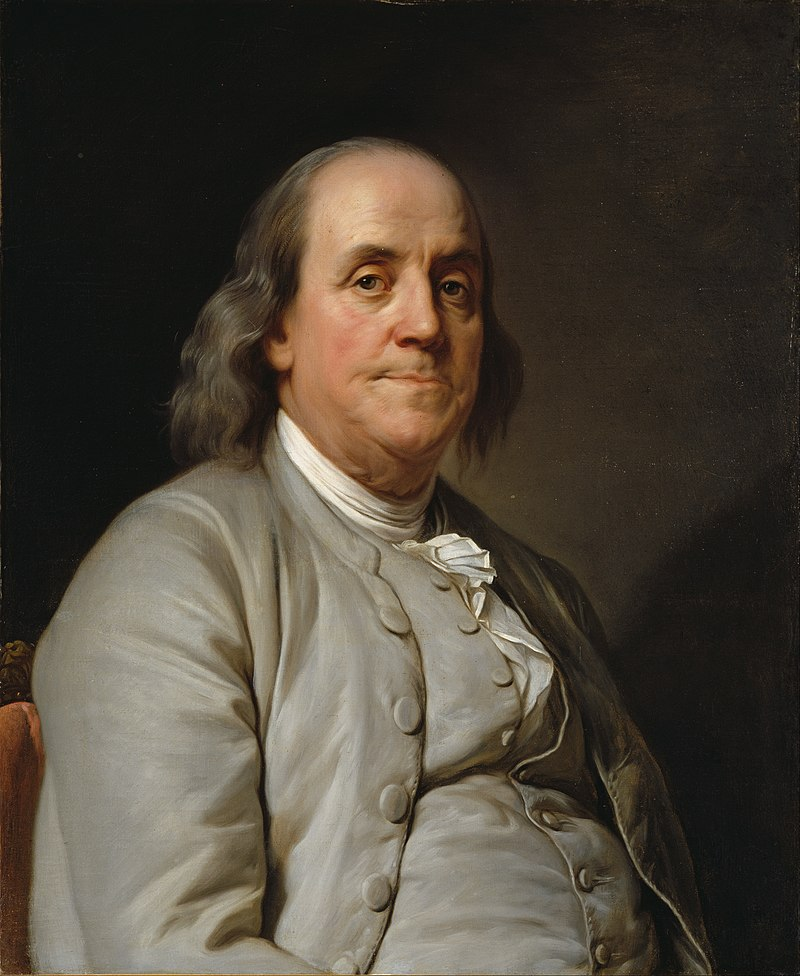
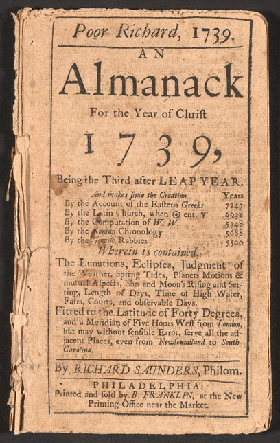
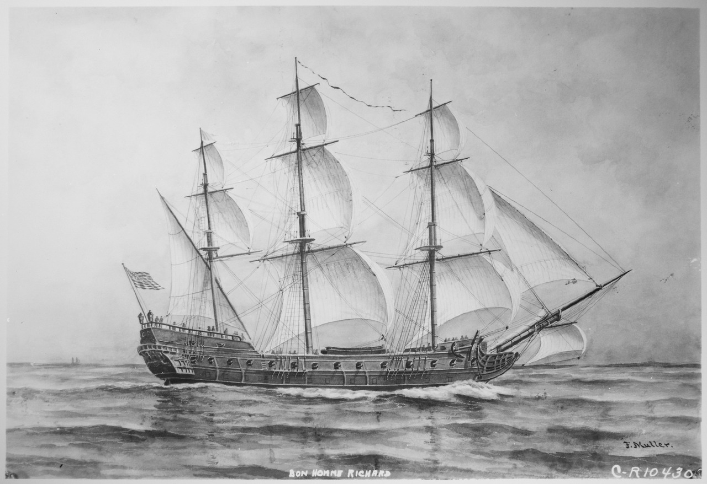
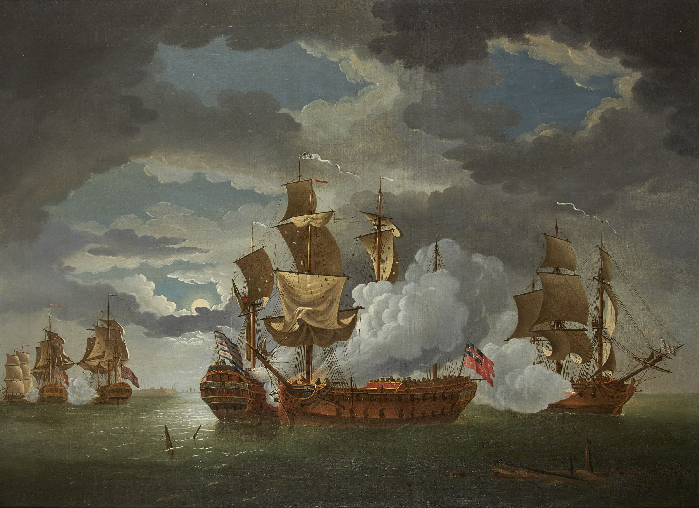
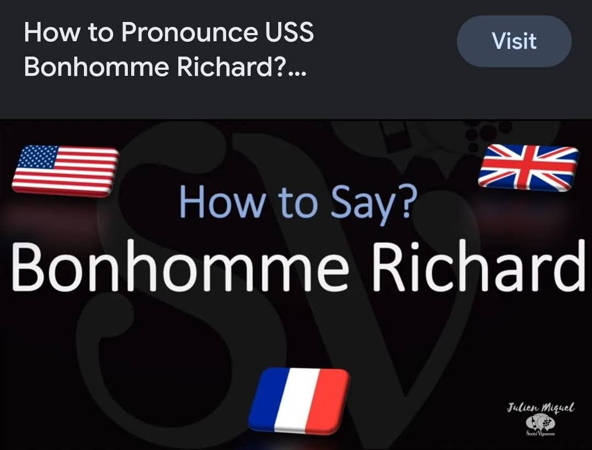

도대체 Bonhomme Richard는 누구인가?
게시: 2023-05-29T06:30:51+09:00
최근에 어떤 책에서 어떤 분이 Charles de Gaulle을 "찰스" 드 골이라고 번역을 해놓아 화제(...라기보다는 조롱의 대상)가 되었습니다. 사실 비영어권 유럽인들의 이름을 번역하는 것은 매우 어려운 일입니다. 미국인들 중 상당수가 실제로 샤를 드 골을 그냥 찰스 '디'골이라고 읽는데, 그걸 잘못되었다고 생각하는 미국인들은 많지 않습니다. 굳이 비유를 하자면, 피렌체를 플로렌스로 부르거나, 가또 키요마사를 가등청정이라고 부르는 것과 같습니다. 특히 대부분의 국내 번역 서적이 프랑스나 폴란드 등 비영어권에서 나오는 것이 아니라 영국이나 미국에서 나오는데, 그런 책 속에는 비영어권 사람 이름조차도 그냥 영어화된 철자로 표기되는 경우가 많아서 더욱 그렇습니다. 가령 프랑수아(Francois)를 아예 프랜시스(Francis)로 표기하는 영문 서적이 대부분입니다. 이게 프랑스의 경우는 그나마 익숙하기 때문에 분간이 되는데, 폴란드나 러시아 이름 같은 경우는 지금 내가 보고 있는 철자가 원어 표기인지 영어화된 표기인지 알기 어렵습니다.
거기다 반쯤 일본식으로 이미 익숙해진 표기까지 겹치면 더욱 그러합니다. 가령 독일과 폴란드의 국경 노릇을 하던 Oder 강은 보통 한국어로 오데르라고 하지만 정작 독일어로는 대충 '오다(더)'입니다. 끝부분의 R은 아예 발음이 되지 않습니다. 하지만 남들이 다 오데르라고 부르고 인지하는데 저 혼자 현지 발음은 그게 아니라며 '오다'라고 쓰면 (어차피 제 블로그 읽는 분들이 다 한국분일텐데) 오다 강이 무슨 강인가 어리둥절하실테니 좋은 생각은 아닙니다. 로마제국흥망사를 쓴 기본도 서문에 표기법에 대해 설명을 하면서 이미 영어로 익숙해진 지명은 그대로 쓴다고 밝혔습니다. 가령 다마스커스는 로마화된 표기일 뿐 실제 현지 발음은 다마섹에 가깝지만 다마스커스라는 명칭이 워낙 익숙하므로 그냥 다마스커스라고 쓴다는 것이지요.
어차피 현지어 발음을 그대로 쓴다는 것은 불가능합니다. 따지고 보면 끝이 없거든요. Monsieur Blanc도 보통 므슈 블랑이라고 쓰지만 자세히 불어 발음을 들어보면 므슈 블롱이라고 써야합니다. 근데 그건 프랑스 사람 만났을 때 그렇게 하면 됩니다. 우리끼리 그럴 필요는 없다고 생각합니다.
그런 의미에서, 이번 포스팅에서는 나폴레옹 연재를 한 차례 쉬고 몇 년 전에 방화로 소실된 미해군 강습함 USS Bonhomme Richard을 뭐라고 읽어야 하는지에 대해서 썼습니다.
---------------------
Wasp급 강습함(amphibious assault ship, 흔히 앰핍(amphib)이라고 부름)인 USS Bonhomme Richard (LHD-6, 4만1천톤, 22노트)는 2020년 7월 항구에서 미해군 수병의 방화로 큰 피해를 입고 퇴역한 뒤 고철로 팔려나간 상태입니다. 저 이름을 뭐라고 읽어야 하는지 흔히 헷갈리는데, 저 Bonhomme이라는 이름은 프랑스어이기 때문입니다. 그런데 분명히 미국 군함인데 왜 저런 프랑스식 이름이 붙었을까요? 여기에는 사연이 있습니다.

(USS Bonhomme Richard (LHD-6)의 잘 나갈 때의 모습입니다. LHD답게 함미에 상륙정이 출입할 수 있는 well-deck이 갖추어진 것이 보입니다.)

(USS Bonhomme Richard (LHD-6)의 별로 영광스럽지 못한 모습입니다.) 보통 밀덕들 사이에 잘 알려진 미해군 함정 중 대표적인 것이 WW2 때인 1944년 진수되어 활약한 Essex급 정규항모 USS Bon Homme Richard (CV-31, 3만6천톤, 33노트)입니다. 희한하게도 이때는 Bonhomme이 아니라 Bon Homme으로 띄어썼습니다. (왜 표기법이 바뀌었는지는 뒤에 설명이 나옵니다.) WW2 당시엔 항모들의 이름을 주로 독립전쟁 때의 미해군 함정이나 당시 유명한 전투가 벌어진 지명을 따서 붙였습니다. 가령 Lexington이나 Yorktown, Antietam 같은 것이 전투 이름을 따서 지은 항모이고, Essex나Intrepid, Kearsarge 등은 당시 미약했던 미해군이 보유하고 있던 어중이떠중이 범선들의 이름을 이어받은 것이었습니다. 그리고 Bon Homme Richard도 그런 군함들 중의 하나였습니다.
 
(위는 WW2 당시의 Bon Homme Richard (CV-31)입니다. 5인치 함포 포탑이 인상적입니다. 나중에 한국전에도 참전했고 개장을 거쳐 베트남전에서도 활약했습니다. 아래 사진이 Skyhawk 등 제트기를 탑재한 개장된 Bon Homme Richard입니다.) 그런데 당시 미해군은 왜 배 이름을 그렇게 이상하게 지었을까요? 물론 당시 독립전쟁의 든든한 후원자인 프랑스 때문이었는데, 실은 꼭 그렇지만도 않았습니다. 봉옴 리처드는 실은 벤자민 프랭클린(Benjamin Franklin)의 필명이기 때문이었습니다.

(대통령은 아니었지만, 어쩌면 그래서 더욱 존경받는 만물박사 벤자민 프랭클린입니다. 그러나 그런 그도 불륜 등 사적으로는 비난 받을 구석이 의외로 적지 않았다고 합니다. 세상에 완벽한 사람은 없습니다.) 벤자민 프랭클린은 원래 정규 교육을 2년 밖에 못 받은 저학력 인쇄공이었는데 왕성한 독서를 통해 지식인이 되었고, 이후 이런저런 저작 활동과 신문 제작을 통해 생계를 유지했습니다. 요즘으로 치면 일종의 디지털 크리에이터, 유튜버 같은 직업을 가지고 있었던 것입니다. 그가 20대 때 Richard Saunders라는 필명으로 1년에 1번 발행하던 Poor Richard's Almanack (가난한 리처드의 연감)은 꽤 히트작이었고, 심지어 프랑스에서도 번역되어 출간될 정도였습니다.

(가난한 리처드의 연감은 인터넷은 커녕 라디오도 없고 서점조차 흔하지 않던 북미 식민지에서는 굉장한 히트작이었습니다. 13개 식민지에서 연간 1만부 정도가 팔렸다고 합니다. 내용도 알차서 교양적 내용은 물론 대략적인 연간 날씨에 대한 조언, 가사에 대한 실용적 팁, 기타 낱말 맞추기 놀이 등 유용한 정보와 오락거리로 꽉찬 종합선물세트였습니다.) 그러던 중에 1779년 프랑스 국왕 루이 16세가 미국 독립전쟁을 후원하기 위해 식민지 해군의 John Paul Jones 함장에게 배를 한 척 하사합니다. 이 배는 원래 인도와 중국 등을 오가던 900톤짜리 무역선 뒥 드 뒤라스(Duc de Duras, 이것도 프랑스 사람에 따라 뒤라스라고 발음하는 사람이 있고 뒤라라고 발음하는 사람이 있습니다... https://ko.forvo.com/search/Duras/fr/ 참조) 였는데, 영국의 통상을 약탈하기 위해 사략선을 구하여 프랑스에 와있던 존 폴 존스에게 이를 준 것입니다. 존 폴 존스는 재빨리 42문의 함포를 장착하여 군함으로 개조한 이 배를, 당시 프랑스의 원조를 받아내는데 꽤 큰 역할을 했던 벤자민 프랭클린의 필명을 따서 Bon Homme Richard라고 이름을 지었습니다. 여기서 리처드 앞에 붙은 Bon Homme은 영어로는 Good Man 즉 선량한 사람이라는 뜻인데, 이건 아무런 작위도 직함을 가지고 있지 않던 평민을 예의차려 부르는 칭호였습니다. 그러니까 현대 한국어로 치면 '선생님' 정도에 해당하는 호칭이지요.

(시작은 미천하나 끝은 장대했던 제1대 Bon Homme Richard입니다.)
그나마 존스 함장은 프랑스어에 익숙하지 않아 이 군함의 이름을 Bon Homme Richard라고 지었지만, 실은 당대 프랑스어로도 그런 호칭은 Bon Homme이 아니라 Bonhomme이라고 붙여 쓰는 것이 옳았습니다. 그래서 1779년의 42문짜리 프리깃함은 USS Bon Homme Richard이었고, 그를 그대로 이어받은 1944년의 에섹스급 항모도 USS Bon Homme Richard라는 표기를 그대로 따왔지만, 1997년 새로 진수된 LHD인 본엄 리처드는 '이제라도 제대로 된 맞춤법인 USS Bonhomme Richard로 쓰자'고 해서 Bonhomme을 붙여 쓰게 된 것입니다. 다만 LHD-6인 USS Bonhomme Richard처럼, 1779년의 USS Bon Homme Richard도 제 수명을 다 누리지는 못했습니다. 존스가 이 배를 맡은 지 불과 7개월 만인 1779년 9월, 봉옴 리처드 호와 기타 몇 척의 작은 군함을 이끌고 영국 화물선들을 노리던 존스 함장은 영국 동해안인 Flamborough Head 앞바다에서 41여척의 화물선단을 만났습니다. 다만 거기에는 44문짜리 제5급함인 HMS Serapis와 함께 무장함 Countess of Scarborough이 호위함으로 붙어 있었습니다. 당연히 치열한 전투가 벌어졌습니다. 저녁 6시에 시작된 전투는 무려 4시간이나 이어져 밤까지 이어졌는데, 무장과 기동력 측면에서 더 우월했던 세라피스가 본옴 리처드를 마침내 그로기 상태로 몰아넣었습니다. 이 정도면 충분했다고 생각한 세라피스의 함장이 존스에게 메가폰으로 항복을 권유하자, 존스는 이렇게 외쳤다고 합니다. "님아, 본좌는 여태껏 내공의 절반도 쓰지 않고 있었도다!"
(Sir, I have not yet begun to fight! 직역하면 '내 싸움은 이제 막 시작일 뿐입니다' 정도)

(Flamborough Head 해전입니다. 중앙에서 맞붙은 두 척 중에 함미를 보이고 있는 것이 USS Bon Homme Richard이고 함수를 보여주고 있는 것이 HMS Serapis입니다.) 이렇게 패망 플래그를 세운 존스는 기동성 측면에서 진짜 군함과의 싸움은 불리하다고 판단하고는 우격다짐으로 세라피스의 측면에 봉옴 리처드를 들이대고는 서로의 난간을 묶어버렸습니다. 이어서 벌어진 백병전에서 치열하게 싸운 끝에, 결국 존스의 선원들이 세라피스의 선원들을 제압하고 항복을 받아냈습니다. 그러나 이미 심하게 파손되어 물이 새고 화재까지 발생했던 봉옴 리처드는 결국 침몰해버렸고, 존스와 그 선원들은 나포한 세라피스를 타고 네덜란드로 향해야 했습니다. 그게 짧고도 굵은 USS Bon Homme Richard의 활약이었습니다.

결과적으로 USS Bonhomme Richard는 뭐라고 읽어야 할까요? 보통은 본엄 리처드라고 읽는 것 같습니다. 원래 리처드가 분명히 미국인 이름이므로 그렇게 읽는 것이 맞다고 생각합니다. 가끔 프랑스식으로 봉옴 라샤르라고 읽기도 하고 완전히 영어식으로 본험 리처드라고 읽기도 하는데, 정작 미해군 수병들은 뭐라고 읽든 신경쓰지 않는 분위기입니다. 왜냐하면 지들끼리는 저렇게 복잡한 이름으로 부르지 않고 보통 Bonnie Dick이라고 부르기 때문입니다. 아시다시피 Thomas의 애칭이 Tom이고 William의 애칭이 Bill인 것처럼, Richard의 애칭이 Dick이거든요. 다만 Dick에는 남성 성기를 가리키는 뜻도 있기 때문에, 좀 점잖은 사람들은 그냥 BHR (비에이취알)로 부르기도 한다고 합니다.
Source : https://en.wikipedia.org/wiki/Battle_of_Flamborough_Head
https://en.wikipedia.org/wiki/USS_Bonhomme_Richard_(LHD-6)
https://en.wikipedia.org/wiki/USS_Bon_Homme_Richard_(CV-31)
https://www.seaforces.org/usnships/cv/CV-31-USS-Bon-Homme-Richard.htm
https://en.wikipedia.org/wiki/Poor_Richard%27s_Almanack
https://en.wikipedia.org/wiki/Benjamin_Franklin https://en.wikipedia.org/wiki/USS_Bonhomme_Richard_(1765)